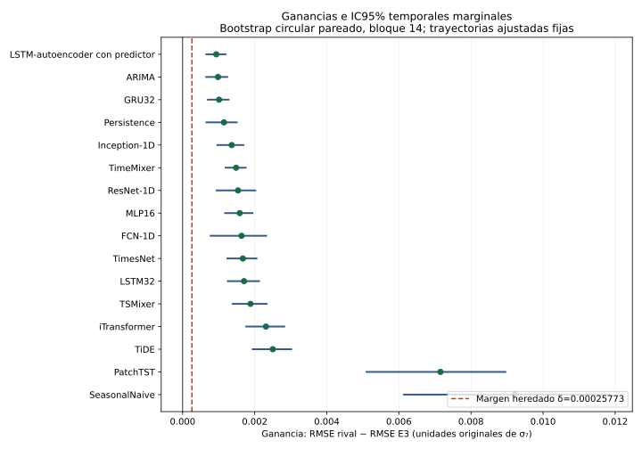

8 Bloque D Verificación estadística y evaluación ampliada#
Corte del 17 de noviembre de 2026: análisis retrospectivo ejecutado sobre predicciones congeladas. La CNN-LSTM con atención de contenido y salida aditiva positiva tiene diez semillas; cada una de las trece redes rivales también tiene diez. Persistence, SeasonalNaive y ARIMA conservan una trayectoria determinista cada uno. La comparación incluye los diecisiete sistemas sobre las mismas 608 fechas, sin eliminar rivales, semillas ni observaciones.
Los 48 contrastes principales —dieciséis rivales por tres procedimientos— rechazaron sus nulas frente al margen heredado, con Holm sobre los 48 p-valores y máximo p ajustado 0,0019. Las sensibilidades temporales conservaron esa decisión. Este resultado está condicionado al calendario y a los supuestos de cada método: no acredita por sí solo R3, un diseño confirmatorio previo o la originalidad del mecanismo. El MCS auxiliar conserva diez sistemas, incluido E3; no identifica un ganador único.
Los suplementos 8.10–8.12, ejecutados el 18 de noviembre, añaden una auditoría del piso observable, un diagnóstico retrospectivo de intervalos y dimensionamiento condicional para una evaluación futura. Mantienen separados esos resultados nuevos de las tablas, las predicciones y los 48 contrastes del corte anterior. Incluyen resultados adversos: el control sólo piso tiene menor MAE que E3 y la cobertura posterior cae por debajo del nominal en 2026Q1. Ninguno acredita una campaña confirmatoria o R3.
8.1 Protocolo experimental pre-registrado#
No existe un preregistro confirmatorio de esta comparación. El borrador de Bloque D continúa identificado como borrador. El plan de esta etapa se fijó en el commit 4a21b032, después de conocer las predicciones y sus métricas medias y antes de calcular estos p-valores. El código probado se fijó en 02132664 antes de ejecutar el análisis.
La cronología permite reproducir las decisiones de esta etapa; no restaura el cegamiento del test. Se conservan el plan con once insumos y SHA256 y el protocolo de análisis posterior.
El borrador histórico de protocolo conserva su archivo y su enlace de descarga anteriores. Su estado de borrador no cambia por esta evaluación posterior.
El documento canónico de trabajo organiza ahora los campos exigidos, con fecha real y estado borrador posterior a los resultados conocidos. No lleva una etiqueta que certifique un congelamiento confirmatorio anterior. Antes de una campaña futura deben resolverse y registrarse los siguientes campos; crear el archivo no completa sus decisiones:
Se conservan su copia de borrador para revisión y la matriz de preparación del protocolo. Los campos pendientes no se convierten en decisiones cerradas mediante estos archivos.
Campo mínimo de la sección 8.1 de la guía |
Evidencia disponible y cierre necesario |
|---|---|
Estándar de profundidad y compromiso |
Estándar teórico y |
Hipótesis principales y exploratorias |
La ganancia de RMSE y el margen se especifican abajo. Las hipótesis del mecanismo y predicciones secundarias deben corresponder al aporte defendido; las de penalización/saturación no se trasladan a la salida aditiva. Conservar lo posterior como exploratorio. |
Métrica primaria, secundarias y margen heredado |
Media de RMSE individuales, MAE secundaria y δ heredado. No cambiar de métrica, dirección o margen después de ver la prueba; las métricas descriptivas añadidas conservan su fecha posterior. |
Fuente del mecanismo y transferencia |
Procedencia y antecedentes, con componentes conocidos y revisión abierta. No inventar una fuente o adaptación para completar la casilla. |
Tres conjuntos adicionales |
Sin selección final ni admisión: el inventario posterior de 8.12 tiene tres candidatos y cero admitidos. Fijar tarea, fuentes, licencia, versión/hash y diferencias en al menos dos ejes antes de conocer su desempeño. |
Particiones, ejecuciones, semillas y determinismo |
Calendario y diez inicializaciones registrados para la comparación histórica; cerrar separación confirmatoria, número final dimensionado y políticas/tolerancias por backend para la campaña futura. |
Familia, pruebas, ajustes y nivel |
Los 16 rivales permanecen completos. El análisis posterior tiene Holm global48, α=0,05 y MCS auxiliar al 90 %; justificar las pruebas y familias definitivas antes de confirmar. |
Optimización, cómputo y potencia |
Registrar número de configuraciones, épocas/parada y tiempo real por modelo, con capacidad y hardware. La política comparable y la potencia por contraste/conjunta siguen abiertas. |
Nd y desarrollo frente a confirmación |
Bitácora consolidada parcial; ocho recetas de desarrollo no son el Nd global, y diez semillas no son diez diseños. |
Fecha/tag y desviaciones |
Registrar la versión final antes de sus experimentos y mantener una bitácora fechada de desviaciones, con motivo e impacto. Un análisis no previsto conserva alcance exploratorio y no sustenta por sí solo R3. |
La ecuación (30) define la métrica primaria como la media de las RMSE individuales, en unidades originales de sigma7 poblacional, sin anualización:
Positivo favorece a E3. No se sustituye esta media por la RMSE de un ensemble o por la raíz del MSE agregado entre semillas. Se mantiene el margen del borrador:
El parámetro y la incertidumbre representada dependen de cada procedimiento. Las semillas son 271801–271810. La semilla histórica 20261116 queda fuera de la comparación. Las fechas comunes van del 1 de enero de 2025 al 31 de agosto de 2026; este calendario ya era conocido.
8.2 Equidad de la comparación#
La auditoría verificó los once archivos fijados, las fechas y objetivos exactos, las 608 máscaras válidas, las coordenadas de semilla y la conservación de los 81 predictores históricos de E2 dentro de su ampliación a 133 predictores. Las métricas guardadas coinciden con las recalculadas. Se conserva el informe de admisión.
Tratamiento |
E2: trece redes |
CNN-LSTM E3 |
|---|---|---|
Entrenamiento |
655 ejemplos; hasta 2024-10-31 |
532 ejemplos; hasta 2024-06-30 |
Purga entre ajuste y validación |
Receta final de E2 conservada |
7 ejemplos |
Validación para selección/parada |
Épocas finales fijadas por la receta previa |
116 ejemplos; 2024-07-08 a 2024-10-31 |
Calibración de la campaña histórica |
53 ejemplos; 2024-11-08 a 2024-12-30 |
No utilizada en la campaña original; el diagnóstico separado de 8.11 abre esas ventanas después |
Prueba común |
608 fechas |
Las mismas 608 fechas y objetivos |
Repeticiones estocásticas |
10 por red |
10 |
La ampliación de E2 añadió cuatro semillas por red, 52 ajustes, sin retunear las recetas. Los tres clásicos siguen almacenados una sola vez. Los ajustes y calibradores nuevos quedaron confirmados antes de producir sus nuevas predicciones de prueba. La CNN-LSTM se reutilizó desde su réplica de diez semillas.
Tener diez semillas por red no iguala las particiones, la selección ni el presupuesto de entrenamiento. Estos contrastes comparan las recetas ejecutadas; no aíslan un efecto causal de arquitectura. Se conservan separados los 5130,970719594005 segundos registrados de la ampliación E2 y los 948,439625042 segundos cerrados de E3. La etapa estadística del 17 de noviembre ejecutó cero ajustes y cero inferencias nuevas, en CPU; los 530 forwards de calibración del suplemento 8.11 se registran aparte.
La equidad futura requiere fijar la misma herramienta y número de intentos de HPO, máximo de épocas, criterio de parada y espacio relativo de búsqueda; el mismo número de configuraciones no iguala tiempo cuando su coste difiere. Debe declararse si el presupuesto se mide en configuraciones, cómputo o ambos, e igualar el tiempo total o reportar ambos análisis cuando corresponda. El esfuerzo de diseño se registra aparte del HPO. No se cambia la receta congelada de un rival para favorecer retrospectivamente la comparación.
El preprocesamiento, las variables disponibles, aumentos aplicables, particiones, fuente de pesos preentrenados y métrica deben ser comunes en el protocolo pertinente. Se reportarán parámetros y FLOPs de todos los modelos; si el original resulta sustancialmente mayor que el mejor benchmark, se incluirá una comparación de capacidad comparable o una discusión explícita del efecto del tamaño. Las medidas existentes de GPU, eager CPU y TorchScript tienen condiciones distintas: faltan una contabilidad completa por modelo de entrenamiento/inferencia, hardware, memoria pico y energía estimada con método. Una trayectoria determinista se conserva como tal: duplicarla diez veces no produce incertidumbre de inicialización.
8.3 Evaluación en conjuntos de datos adicionales#
Pendiente. Este análisis sólo usa una cronología BTC conocida. No se han evaluado tres conjuntos adicionales ni se ha demostrado consistencia entre dominios. Las semillas no son conjuntos de datos independientes; por eso no se ejecuta Friedman, Iman–Davenport o un diagrama de diferencia crítica usando las diez inicializaciones como si fueran diez mercados.
La elección y evaluación de los conjuntos adicionales, sus márgenes por escala, licencias, auditorías y comparación completa siguen requiriendo un diseño previo. No se promedian RMSE de escalas distintas ni se denomina confirmación independiente a otro tramo ya expuesto.
El inventario preparatorio del 18 de noviembre, resumido en 8.12, identifica tres candidatos mediante metadatos y términos, con cero conjuntos admitidos o evaluados. Documenta posibilidades y bloqueos; no completa la elección final, la inspección de archivos o la consistencia entre dominios.
Cada conjunto debe mantener la misma tarea y métrica primaria y diferir del principal en al menos dos ejes pertinentes de la guía: tamaño, dominio, ruido, dimensionalidad o desbalance cuando sea aplicable. En esta regresión no se inventa un desbalance de clases; la distribución del objetivo puede describirse como contexto sin convertirla automáticamente en otro eje acreditado. Su ficha debe identificar fuente pública, licencia/condiciones, versión y hash, periodo/unidad independiente, ejes de diferencia, particiones, auditoría de fuga, presupuesto y margen con unidades. Los 17 sistemas se evalúan en cada conjunto; una limitación de memoria del dashboard no autoriza excluir un rival científico.
La consolidación podrá usar Friedman con corrección de Iman–Davenport y comparaciones por pares con Holm, o una alternativa bayesiana de rangos con signo y ROPE previamente justificada. La elección se fija antes de ver los resultados, con rangos y márgenes pertinentes; con sólo tres conjuntos la potencia global es limitada. Se informarán también diferencias, IC y efectos por conjunto y la consistencia del resultado, sin mezclar RMSE de escalas distintas en un promedio bruto. Un conjunto usado para rediseñar el modelo pasa a desarrollo y deja de aportar confirmación independiente.
8.4 Definición operativa de superioridad R3#
La guía exige seis condiciones simultáneas; ninguna se sustituye por otra:
Condición de la sección 8.4 |
Evidencia de este corte |
Cierre necesario |
|---|---|---|
1. Mejor media primaria frente a cada rival |
E3 tiene la menor RMSE media individual de los 17 sistemas históricos; MAE también favorable dentro de esa familia. |
Observado en el calendario histórico, con tratamientos de entrenamiento distintos. El control posterior sólo piso de 8.10 conserva su resultado adverso de MAE fuera de esa familia. |
2. Al menos tres pruebas distintas admisibles por contraste, control familiar y ganancia mayor que δ |
48/48 rechazos bajo tres procedimientos posteriores, con Holm global48. |
Justificar su admisibilidad según la Tabla 4 y sus supuestos. Ni la suma de tres métodos ni el MCS auxiliar sobre otra pérdida completan automáticamente esta condición. |
3. Efecto no despreciable e IC favorable |
Ganancias, IC temporales y Cohen dz entre semillas disponibles; frente al SAE la ganancia es 0,0009334571. |
La guía usa \(\lvert\delta_{\rm Cliff}\rvert\ge0,147\) o \(\lvert d_{\rm Cohen}\rvert\ge0,2\) cuando sean apropiados, y límite inferior del IC95 % de la diferencia >0, idealmente >δ. Justificar unidad y alcance; un dz condicionado al calendario no mide diferencias entre mercados. Los IC publicados son marginales, no simultáneos. |
4. Consistencia adicional |
No hay resultados en tres conjuntos adicionales. |
Mejor media en al menos dos de los tres y ninguna inferioridad significativa frente a un rival en cualquiera. La ausencia de rechazo de inferioridad no se renombra como equivalencia o no inferioridad demostrada. |
5. Adecuación del propio modelo |
Esta etapa compara errores guardados; no completa las Tablas A/B de E3. |
Superar el baseline trivial, brecha train–validación dentro del margen de adecuación, calibración/residuos aceptables y consistencia validación–prueba bajo datos y riesgos comparables. |
6. Robustez a la elección de la prueba |
Bloques/rezagos 7/14/28 y MAE secundaria mantienen decisiones posteriores. |
Alternativas paramétricas/no paramétricas pertinentes y sensibilidad a las correcciones que el diseño admita. Nadeau–Bengio no se aplica a días o semillas de esta única cronología; esa limitación debe justificarse, sin simular una comparación inexistente. |
Además siguen pendientes el preregistro previo, la comparación justa y la potencia exigida por el estándar. Por tanto, R3 permanece sin acreditar. La inferioridad no rechazada, la pertenencia al MCS o un p pequeño no prueban equivalencia, originalidad o cumplimiento del entregable completo.
8.5 Familia de contrastes#
Se conservaron los dieciséis rivales fijados en el borrador:
Grupo |
Modelos |
|---|---|
Top 10 de E2 |
FCN-1D, ResNet-1D, Inception-1D, LSTM-autoencoder con predictor, TimesNet, TSMixer, TiDE, TimeMixer, PatchTST, iTransformer |
Referencias neuronales |
MLP16, LSTM32, GRU32 |
Clásicos deterministas |
Persistence, SeasonalNaive, ARIMA |
Sistema |
RMSE media |
DE entre semillas |
MAE |
sMAPE (%) |
R² medio |
Cobertura 90% (%) |
Anchura media |
|---|---|---|---|---|---|---|---|
CNN-LSTM-atencion-aditiva E3 |
0.002939432 |
0.000047125 |
0.001892827 |
11.098 |
0.911779 |
Pendiente |
Pendiente |
LSTM-autoencoder con predictor |
0.003872889 |
0.000307325 |
0.002860847 |
16.748 |
0.846018 |
96.102 |
0.015971111 |
ARIMA |
0.003921625 |
— |
0.002499710 |
14.277 |
0.843008 |
94.572 |
0.015443316 |
GRU32 |
0.003949975 |
0.000165270 |
0.003004820 |
17.793 |
0.840479 |
96.974 |
0.017545518 |
Persistence |
0.004085596 |
— |
0.002353164 |
13.229 |
0.829605 |
93.257 |
0.015117306 |
Inception-1D |
0.004300219 |
0.000297330 |
0.003092672 |
17.706 |
0.810420 |
91.891 |
0.014500613 |
TimeMixer |
0.004423327 |
0.000560454 |
0.003394541 |
19.504 |
0.797384 |
92.105 |
0.014756650 |
ResNet-1D |
0.004476908 |
0.000423725 |
0.003143841 |
17.599 |
0.793752 |
90.806 |
0.012974740 |
MLP16 |
0.004522873 |
0.000240218 |
0.003495322 |
19.873 |
0.790649 |
96.530 |
0.020016294 |
FCN-1D |
0.004574328 |
0.000208060 |
0.003059855 |
16.967 |
0.786003 |
89.984 |
0.012203510 |
TimesNet |
0.004610965 |
0.000513763 |
0.003326514 |
18.564 |
0.780540 |
93.026 |
0.015971274 |
LSTM32 |
0.004643827 |
0.000116435 |
0.003685474 |
21.166 |
0.779736 |
97.385 |
0.020349582 |
TSMixer |
0.004821543 |
0.000444445 |
0.003434629 |
18.869 |
0.760874 |
93.536 |
0.018195702 |
iTransformer |
0.005250680 |
0.000052536 |
0.003980737 |
22.007 |
0.718540 |
84.243 |
0.014100908 |
TiDE |
0.005439748 |
0.000982847 |
0.003864929 |
21.610 |
0.689058 |
92.895 |
0.018817514 |
PatchTST |
0.010093051 |
0.000238637 |
0.007569446 |
38.627 |
-0.040421 |
93.635 |
0.031247636 |
SeasonalNaive |
0.012148568 |
— |
0.008520579 |
42.129 |
-0.506593 |
92.928 |
0.037180183 |
La tabla incorpora la CNN-LSTM y las diez semillas de cada red, sin elegir una réplica por rendimiento. MAE, sMAPE y R² se calculan por predictor y después se promedian. sMAPE se expresa en porcentaje; RMSE, MAE y anchura usan unidades originales de σ7, sin anualización. Para una trayectoria,
con contribución cero cuando ambos valores de un término sMAPE son cero. La media de R² no es el R² de un ensamble. E3 obtiene sMAPE 11,0977 % y R² medio 0,911779 en este calendario. La tabla abreviada del corte estadístico conserva sus bytes; el suplemento amplía métricas descriptivas y no cambia sus p-valores.
La cobertura y anchura de E2 se reconstruyen exclusivamente con los cuantiles residuales ya congelados de cada predictor, mediante \([\max(0,\widehat y-q),\widehat y+q]\); no se ajustó un nuevo calibrador con prueba. Son medias de las coberturas y anchuras individuales, no de un intervalo de ensamble. La campaña original E3 no produjo un cuantil ni intervalo calibrado, por lo que sus dos campos permanecen ausentes en esta tabla histórica y en el servicio. El suplemento separado 8.11 sí calcula diez cuantiles posteriores; no reescribe estos campos o el protocolo anterior. La DE entre semillas no rellena esas casillas y el nominal 90 % no constituye garantía individual bajo dependencia o cambio temporal.

Figura 2 RMSE medio y DE muestral entre inicializaciones. Los clásicos tienen R=1 y no reciben una barra de dispersión artificial. La DE entre semillas no es un intervalo predictivo ni temporal.#
La CNN-LSTM obtuvo RMSE medio 0,0029394324 y MAE medio 0,0018928273. El mejor rival por RMSE fue LSTM-autoencoder, con 0,0038728895: la reducción relativa observada de E3 fue 24,10 %. Frente a ese rival, la ganancia absoluta fue 0,0009334571, con IC95% temporal marginal [0,0006329359; 0,0012131746].
La afirmación «supera a todos» es una regla de unión–intersección: deben satisfacerse todos los contrastes exigidos, no un subconjunto favorable. La familia tiene 16 rivales, aunque la guía ilustre otros tamaños con m≈12; el control posterior abarca sus 48 componentes de prueba. Cualquier exclusión de una futura familia tendría que justificarse antes del congelamiento por razones ajenas al desempeño observado. Las familias de ablación, conjuntos adicionales, subgrupos y horizontes se declaran y controlan por separado; no se usa su separación para hacer más permisiva la afirmación principal.
8.6 Reglas metodológicas para que las pruebas sean válidas#
Procedimiento ejecutado |
Unidad y supuestos |
Interpretación |
|---|---|---|
Bootstrap temporal circular pareado |
9999 réplicas; bloques de 14 días sincronizados para todos los sistemas y semillas; trayectorias ajustadas fijas; aproximación de dependencia débil y estabilidad temporal |
Ruido de la ganancia de RMSE centrado para contrastar la frontera delta; incertidumbre del calendario condicionada a los ajustes |
Influencia de la media de RMSE con Bartlett-HAC |
Derivada de cada raíz antes de promediar, 14 rezagos, aproximación normal y varianza de largo plazo |
Alternativa temporal; no es DM–HLN ni un traslado del margen de RMSE a MSE |
t pareada entre semillas |
Diez ganancias por identificador de semilla, 9 grados de libertad; inicializaciones independientes y ganancias aproximadamente normales |
Incertidumbre de inicialización condicionada al calendario; el clásico aporta una trayectoria fija, no diez ajustes inventados |
Para HAC se usa la influencia
El bootstrap recalcula la métrica completa y compara su ruido centrado con la distancia observada al margen. Usa la corrección Monte Carlo de uno en numerador y denominador, con resolución 0,0001. Los p no estimables permanecen en la familia mediante una contribución conservadora de uno para el ajuste y se reportan como no estimables.
Los dieciséis diagnósticos Shapiro entre semillas no rechazaron normalidad a 0,05; el menor p fue 0,0564. Eso no demuestra normalidad con diez observaciones. Los supuestos de estabilidad temporal y del calendario tampoco quedan certificados por los p de comparación. Holm no corrige la exposición previa al test, la selección del diseño ni un supuesto inválido.
La guía exige al menos tres pruebas distintas y apropiadas y al menos un procedimiento global o con control de comparaciones múltiples; no prescribe literalmente idéntico ámbito de incertidumbre. El análisis posterior aplica Holm global48, pero los procedimientos y sus alcances deben justificarse para la hipótesis F2a: sus rechazos no acreditan automáticamente toda la Tabla 4 ni R3. No se aplican correcciones Nadeau–Bengio a días o semillas de esta única cronología, ni Clark–West sin justificar anidamiento.
Relación con las pruebas admisibles de la Tabla 4#
La ruta es temporal, F2a. La comparación actual no se renombra para hacer coincidir métodos diferentes con la tabla de la guía:
Método de la fila temporal de la guía |
Relación con lo ejecutado y decisión que falta |
|---|---|
MCS |
Hay un MCS90 auxiliar de MSE diario medio entre semillas. Es un procedimiento global, pero su estimando no es la media de RMSE ni la ganancia mayor que δ; no sustituye un contraste de ese margen. |
Diebold–Mariano con corrección HLN por horizonte |
No se ejecutó con ese nombre o construcción. El HAC de influencia RMSE es otro procedimiento. La pérdida, el horizonte y la dependencia temporal deberán justificarse; h=1 no elimina la dependencia por ventanas de σ7 solapadas. |
Giacomini–White o Clark–West según anidamiento |
No ejecutados. Exigen el diseño y supuestos pertinentes; no se aplica Clark–West a arquitecturas arbitrarias por compartir datos, ni se añade un instrumento después de mirar qué produce un p favorable. |
Friedman sobre series u orígenes |
No ejecutado con unidades independientes justificadas. Semillas o días correlacionados no se convierten en series independientes para llenar la tabla. |
Bootstrap estacionario |
El análisis usa bloques circulares de longitud fija, no el bootstrap estacionario de longitud aleatoria. Debe justificarse esa alternativa y su alcance; no se presenta como un procedimiento idéntico por cambiarle el nombre. |
La t entre inicializaciones añade información condicional al calendario, pero no se convierte en una tercera prueba temporal de la Tabla 4. La pertinencia de la batería final debe cerrarse antes de la confirmación, conservando los resultados posteriores ya calculados. Las filas tabular, espacial, imágenes o lenguaje no se importan como pruebas adicionales de BTC por estar enumeradas en la guía.
Supuestos, ajuste, calibración y residuos#
El pareado de fechas, objetivos y coordenadas de semilla fue verificado. El pareado estricto de una campaña justa incluye además mismas particiones y preprocesamiento; no queda satisfecho por las 608 fechas comunes cuando los tratamientos de ajuste difieren. La prueba sellada se consulta al final con hiperparámetros, umbrales y parada fijados en validación. El calendario actual ya expuesto no se vuelve sellado por volver a puntuarlo.
Diagnóstico pertinente a F2 |
Qué debe comprobarse y alcance actual |
|---|---|
Dependencia de residuos y de pérdidas |
Ljung–Box, ARCH-LM y BDS cuando sus supuestos sean pertinentes; examinar autocorrelación, heterocedasticidad y dependencia no lineal. No fueron ejecutados para cerrar adecuación de E3 en esta etapa. |
Distribución y calibración puntual |
Jarque–Bera como diagnóstico, Mincer–Zarnowitz y residuos con intercepto/pendiente y cohortes claramente definidas. La falta de normalidad de residuos no se sustituye por Shapiro entre diez ganancias de semillas. |
Ajuste y sobreajuste del original |
Tablas A/B propias, baseline trivial, brecha con el margen δg, riesgos comparables y consistencia dentro/fuera de muestra. δg conserva el valor numérico heredado cuando corresponda, pero su nula de brecha no es la de ganancia mayor que δ. Los diagnósticos de otras redes no acreditan a E3. |
Calidad probabilística |
PIT, cobertura, cuantiles, pinball, CRPS o log-verosimilitud sólo cuando exista la salida probabilística y el procedimiento que los defina. La cabeza aditiva es puntual: una colección de semillas no es por sí sola una distribución predictiva calibrada. |
Cambio y estabilidad |
Comparación de errores dentro/fuera de muestra y pruebas de estabilidad como Giacomini–Rossi cuando proceda. Deben distinguir cambio de distribución, mala especificación y fuga; ninguna conclusión se deduce de un p de superioridad. |
Se reportarán estadísticos, supuestos, p crudos/ajustados y unidades. La significancia práctica deberá discutirse con su magnitud, IC y coste adicional, incluso cuando p sea pequeño. Estos controles de adecuación y calidad no se completan mediante la tabla de comparación de modelos.
8.7 Estrategia estadística: familias, potencia y agregación#
8.7.1 Control del error por familia#
Se fijó una familia principal de 48 hipótesis, con Holm a alfa=0,05. Este control es más amplio que las tres familias de dieciséis propuestas en el borrador. No se eligió la prueba de menor p ni se excluyeron rivales después de ver el resultado. Para la descripción conjunta por rival se exige que los tres p ajustados sean menores que 0,05.
Para p ordenados \(p_{(1)}\le\cdots\le p_{(m)}\), el ajuste monótono es
En este corte \(m=48\) en la ecuación (34). Se informa por rival el máximo de sus tres p ajustados: todos deben rechazar. Holm controla el error familiar bajo p válidos sin exigir independencia entre pruebas; no corrige una prueba inválida o el uso previo del test para diseñar.
Rival |
Ganancia RMSE |
IC95% temporal marginal |
p Holm bootstrap |
p Holm HAC |
p Holm t semillas |
Tres rechazos exploratorios |
|---|---|---|---|---|---|---|
FCN-1D |
0.001634896 |
[0.000753646; 0.002344102] |
0.0019 |
0.0018 |
1.54712e-07 |
Sí |
ResNet-1D |
0.001537475 |
[0.000920657; 0.002041157] |
0.0017 |
0.000291523 |
8.98986e-05 |
Sí |
Inception-1D |
0.001360787 |
[0.000940612; 0.001713045] |
0.0017 |
8.47316e-07 |
1.0829e-05 |
Sí |
LSTM-autoencoder con predictor |
0.000933457 |
[0.000632936; 0.001213175] |
0.0017 |
4.81158e-05 |
0.000581851 |
Sí |
TimesNet |
0.001671532 |
[0.001216163; 0.002075019] |
0.0017 |
1.39839e-09 |
0.000173996 |
Sí |
TSMixer |
0.001882111 |
[0.001367126; 0.002352793] |
0.0017 |
1.95423e-09 |
1.97047e-05 |
Sí |
TiDE |
0.002500315 |
[0.001919999; 0.003034907] |
0.0017 |
2.63593e-13 |
0.000511061 |
Sí |
TimeMixer |
0.001483895 |
[0.001165846; 0.001773545] |
0.0017 |
5.22973e-14 |
0.000787556 |
Sí |
PatchTST |
0.007153618 |
[0.005079083; 0.008978976] |
0.0017 |
3.14787e-10 |
3.67526e-13 |
Sí |
iTransformer |
0.002311247 |
[0.001738825; 0.002844864] |
0.0017 |
9.41143e-12 |
2.82733e-14 |
Sí |
MLP16 |
0.001583441 |
[0.001153515; 0.001963665] |
0.0017 |
3.99019e-09 |
4.17659e-07 |
Sí |
LSTM32 |
0.001704394 |
[0.001227899; 0.002146686] |
0.0017 |
9.50516e-09 |
2.57037e-09 |
Sí |
GRU32 |
0.001010543 |
[0.000677054; 0.001299191] |
0.0017 |
3.1278e-05 |
3.22474e-06 |
Sí |
Persistence |
0.001146163 |
[0.000636396; 0.001526256] |
0.0018 |
0.00126769 |
1.1124e-11 |
Sí |
SeasonalNaive |
0.009209135 |
[0.006116206; 0.011884003] |
0.0017 |
1.46004e-07 |
1.20036e-20 |
Sí |
ARIMA |
0.000982192 |
[0.000629829; 0.001261898] |
0.0017 |
0.000113433 |
6.77669e-11 |
Sí |
Los máximos p Holm fueron 0,0019 en bootstrap, 0,0018 en HAC y 0,0007875561 en la t entre semillas. Los 16 rivales registran los tres rechazos exploratorios. La tabla completa conserva los p crudos, ajustes, estadísticos, incertidumbre, diagnósticos y alcances.


Figura 3 Ganancias e IC95% temporales marginales con bloque 14. Una ganancia positiva favorece a E3. Estos intervalos no son simultáneos para toda la familia.#
Los límites nominales del 95% no deben confundirse con límites simultáneos. La cota inferior Bonferroni48 del bootstrap frente a FCN-1D es 0,0001980411, menor que delta, aunque el contraste Holm rechace. La conclusión no se sustituye por una afirmación inexistente de que todas las cotas Bonferroni superan el margen.
8.7.2 Potencia y número de semillas#
El corte histórico no estimó potencia prospectiva, potencia conjunta ni MDE a partir de este test. Diez semillas cumplen una cantidad de repeticiones; no demuestran el objetivo de potencia de la guía. Calcular potencia observada usando el efecto de este mismo resultado no reemplazaría un dimensionamiento previo con un piloto adecuado. El suplemento 8.12 añade referencias condicionales de tamaño y MDE usando dispersión histórica y alternativas declaradas; no estima la potencia real de la campaña o de su batería completa.
La guía exige un piloto con al menos cinco semillas para estimar la dispersión de diferencias pareadas frente a cada rival y dimensionar la campaña antes de congelarla: potencia de al menos 0,90 por contraste, potencia conjunta reportada y diez semillas como mínimo o más si hace falta. Deben incluirse las decisiones de las tres pruebas y Holm; semillas y calendario no son fuentes de incertidumbre intercambiables. El piloto y la alternativa planificada no se eligen retrospectivamente para declarar suficiente el tamaño ya usado.
La aproximación normal bilateral ilustrada en la guía, con \(\alpha'=0,05/m\), es
donde \(g\) es la distancia de la alternativa planificada a la frontera de la nula y \(\widehat\sigma_d\) la dispersión pertinente. Si se contrasta igualdad y se planifica detectar una diferencia δ, entonces \(g=\delta\). Para nuestra nula de relevancia \(\Delta\le\delta\), una alternativa futura \(\Delta_1>\delta\) da \(g=\Delta_1-\delta\); poner δ en el denominador cambiaría el problema. La elección bilateral/unilateral y su cuantil debe fijarse de acuerdo con la hipótesis, no por el resultado. Esta fórmula no incorpora por sí sola dependencia temporal, estimación de hiperparámetros o incertidumbre conjunta.
Como referencia puramente ilustrativa, con m=12, potencia 0,80 y diseño bilateral normal, una distancia de una DE requiere aproximadamente 14 pares; media DE requiere unos 55. No son el R calculado para E3 ni sustituyen la exigencia 0,90. Si la campaña no alcanza potencia suficiente deberá aumentarse el diseño antes del cierre y, si continúa limitada, reportar su MDE y resultado no concluyente. La ausencia de significancia no demuestra equivalencia: TOST o ROPE requieren margen, procedimiento y datos pertinentes prefijados.
La resolución exacta también importa. Sin empates ni ceros, el menor p bilateral de Wilcoxon con n pares es \(2^{1-n}\): con cinco pares es 0,0625 y no puede rechazar a 0,05. Para superar el primer umbral conservador de Holm, \(0,05/m\), hacen falta al menos nueve pares si m=12, diez si m=16 y once si m=48. Son límites de resolución para esa comparación inicial; un paso posterior de Holm puede tener otro umbral, y estos números no prueban potencia 0,90. No se sustituyen pares independientes por días o semillas×días para alcanzar el conteo.
La potencia de «supera a todos» corresponde al evento conjunto de todas las decisiones exigidas. Multiplicar potencias marginales sólo sería válido bajo independencia: por ejemplo, \(0,90^{12}\approx0,28\) es una ilustración de ese supuesto, no una estimación de este experimento. La dependencia por calendario, rival y método exige una planificación conjunta adecuada. La potencia retrospectiva no se obtiene de los p observados.
Las ilustraciones numéricas de planificación, su script reproducible y la revisión de métodos y alcances documentan estas cuentas y sus supuestos. Son ejemplos matemáticos, no un análisis de potencia ejecutado para la campaña E3.
Los consumos históricos se mantienen cerrados y separados. El registro de ejecución CPU identifica versiones, hashes y tiempo numérico; no se añaden ajustes o inferencias del modelo.
8.7.3 Agregación jerárquica y múltiples conjuntos de datos#
Las unidades se mantienen diferenciadas: una serie compartida, bloques temporales, diecisiete sistemas y sus inicializaciones. Los 6080 pares semilla-fecha de una red no se tratan como 6080 casos iid. La t entre semillas y la inferencia temporal condicionan aspectos distintos; no forman una estimación conjunta de incertidumbre de entrenamiento, selección y mercado.
La tabla de efectos incluye Cohen dz de ganancias pareadas entre semillas e intervalos bootstrap nominales, con su alcance condicionado al calendario. No se interpreta como efecto entre mercados independientes.
Una campaña con varias series, particiones o unidades debe declarar su jerarquía antes de inferir: observaciones correlacionadas se agregan a la unidad pertinente o se modelan con dependencia explícita. El esquema de efectos mixtos de la guía,
se refiere al efecto del modelo \(j\), de la unidad \(i\) y de la semilla \(r\); no autoriza tratar cada día de una serie como un efecto aleatorio iid. Su uso exigiría justificar estructura, correlación y estimabilidad y contrastar al original con cada rival con el control familiar fijado. No se ha ajustado ese modelo aquí. En varios conjuntos se reportarán también diferencias, IC, efectos y probabilidad de superioridad estimada sobre unidades válidas, con el significado de esa probabilidad explícito.
La sensibilidad de la conclusión debe distinguir alternativa de prueba, métrica secundaria registrada y subconjunto razonable de semillas. Se conservan las sensibilidades posteriores de 8.8 sin elegir la más favorable. No se usa «tendencia a la significancia»: falta de evidencia de diferencia y evidencia de equivalencia son afirmaciones distintas.
8.8 Robustez, sensibilidad y calidad probabilística#
Bloque / rezagos |
Rechazos de 48 |
Máximo p Holm |
Uso |
|---|---|---|---|
14 |
48 |
0.0019 |
Principal |
7 |
48 |
0.0029 |
Sensibilidad; no reemplaza principal |
28 |
48 |
0.001853920056482344 |
Sensibilidad; no reemplaza principal |
Los bloques/rezagos 7 y 28 conservaron 48/48 rechazos, cada uno con su familia completa y sin reemplazar la configuración principal de 14. Los máximos p Holm fueron 0,0029 y 0,0018539201, respectivamente. Se conservan todos los contrastes de sensibilidad.
Como métrica secundaria, los 16 contrastes bootstrap de MAE frente a cero rechazaron con Holm16, con máximo p ajustado 0,0016. No se fijó ni se inventó un margen práctico de MAE. La familia secundaria completa y los subconjuntos descriptivos de primeras/últimas cinco semillas permanecen disponibles.
MCS auxiliar con el modelo E3 incluido#
El MCS usa Tmax, nivel 90%, 4999 réplicas y bloques 14. Su pérdida es el MSE diario medio entre semillas, otro estimando respecto a la media de RMSE primaria. Tras siete exclusiones, conserva diez sistemas, con p del último contraste global 0,1442:
Modelo |
MSE diario medio |
MCS90% |
p secuencial de exclusión |
|---|---|---|---|
CNN-LSTM-atencion-aditiva E3 |
8.642261669e-06 |
Permanece |
|
LSTM-autoencoder con predictor |
1.508427687e-05 |
Permanece |
|
ARIMA |
1.537914089e-05 |
Permanece |
|
GRU32 |
1.562688644e-05 |
Permanece |
|
Persistence |
1.669209359e-05 |
Permanece |
|
Inception-1D |
1.857144917e-05 |
Permanece |
|
TimeMixer |
1.984852081e-05 |
Permanece |
|
ResNet-1D |
2.020429111e-05 |
Permanece |
|
MLP16 |
2.050831835e-05 |
Permanece |
|
FCN-1D |
2.09634371e-05 |
Permanece |
|
TimesNet |
2.149855073e-05 |
Excluido |
0.078 |
LSTM32 |
2.157732592e-05 |
Excluido |
0.078 |
TSMixer |
2.342505927e-05 |
Excluido |
0.0306 |
iTransformer |
2.757211991e-05 |
Excluido |
0.0068 |
TiDE |
3.046024196e-05 |
Excluido |
0.0052 |
PatchTST |
0.0001019209273 |
Excluido |
0.0014 |
SeasonalNaive |
0.0001475877012 |
Excluido |
0.0052 |
E3 permanece junto a ARIMA, FCN-1D, GRU32, Inception-1D, LSTM-autoencoder, MLP16, Persistence, ResNet-1D y TimeMixer. Pertenecer al conjunto no prueba equivalencia ni un ganador único. Ese resultado global de MSE no se renombra como contraste de ganancia RMSE mayor que delta. El detalle secuencial del MCS incluye pérdidas, estadísticos y p.
Continúan pendientes la sensibilidad a hiperparámetros propios, las ablaciones comparables, las perturbaciones y curvas de tamaño de muestra, diagnósticos completos de adecuación, explicaciones verificadas, costes comparables y los tres conjuntos adicionales. La auditoría física de 8.10 y la calibración posterior de 8.11 aportan diagnósticos ejecutados con alcance exploratorio; no completan la validación probabilística confirmatoria o su integración en el servicio. Las sensibilidades de bloques y semillas aquí reportadas conservan su alcance histórico.
Estudios exigidos por la Tabla 5#
Estudio |
Evidencia actual y mínimo que falta |
|---|---|
Sensibilidad a hiperparámetros |
Falta variar hiperparámetros propios con superficies/curvas, región de ventaja y sensibilidad frente a benchmarks. Replicar la receta aditiva no constituye HPO ni este estudio. |
Estabilidad por semilla y partición |
Hay diez inicializaciones de una receta sobre un mismo calendario; se reportan dispersión y subgrupos. Falta variación pertinente de particiones, IC/coeficiente de variación con unidades claras y la comparación ANOVA/Kruskal–Wallis sólo cuando su diseño la justifique. Las semillas no son mercados independientes. |
Perturbaciones controladas |
Falta aplicar a toda la familia al menos tres severidades y curvas de degradación. En OHLCV, ruido, datos faltantes o atípicos deben respetar o declarar la coherencia temporal/física; no se traslada sin cautela el estrés artificial de E2. |
Tamaño de muestra y escalabilidad |
Faltan curvas de aprendizaje —por ejemplo 10 %, 25 %, 50 % y 100 %— con varias semillas, más tiempo y memoria al variar tamaño de entrada. Esos porcentajes ilustran el estudio, no corridas realizadas. |
Cambio de distribución |
Falta un periodo, dominio o fuente fuera de toda decisión de diseño. Los conjuntos adicionales y sus derechos/particiones se eligen antes de ver desempeño; reutilizar un calendario conocido no lo vuelve independiente. |
Calibración y reglas de puntuación |
El suplemento 8.11 calcula diez cuantiles posteriores con 53 ventanas de calibración y reporta score de intervalo sobre pronósticos históricos guardados. La campaña original y la app conservan su perfil sin intervalo E3. Faltan validación confirmatoria y los demás diagnósticos de adecuación; pinball, CRPS o log-score requieren las salidas que los definan. No se inventan ECE o probabilidades de clasificación para este objetivo. |
Cuantificación de incertidumbre |
E2 conserva sus cuantiles históricos; 8.11 añade cobertura, anchura, subgrupos e IC temporales posteriores para E3. La cobertura agregada de 94,49 % cae a 86,22 % en 2026Q1 y no demuestra calibración uniforme. El nominal 90 % no es garantía individual; el bootstrap condiciona en modelos y cuantiles fijos. La DE de semillas no reemplaza un intervalo predictivo. |
Eficiencia y frontera de Pareto |
Parámetros y algunos costes están inventariados; faltan FLOPs completos, latencias CPU/GPU, memoria pico, entrenamiento y energía con método común. Las tres referencias TorchScript no representan el catálogo completo ni una medición de Render. |
Análisis de errores |
El piloto conserva diagnósticos posteriores por régimen: en 18 fechas de objetivo realizado alto la aditiva tuvo RMSE 22,50 % mayor que M00 proyectado. Ese grupo no está disponible al pronosticar y no identifica una causa. Faltan escenarios prefijados, errores compartidos con rivales y discusión de fallos sin ocultar desenlaces adversos. |
Las intervenciones y criterios se fijarán antes de medir la evaluación correspondiente, con el mismo protocolo para todos los rivales. Una explicación por atención requiere además fidelidad y estabilidad comparadas con el mejor benchmark; no se convierte en evidencia causal sólo por visualizar sus pesos.
8.9 Reporte obligatorio de resultados#
Producto |
Evidencia de este corte |
Límite |
|---|---|---|
Tabla histórica de 17 sistemas |
RMSE, DE, MAE, sMAPE y R²; cobertura/anchura E2 reconstruidas de cuantiles congelados e IC bootstrap entre semillas disponibles por separado |
Mismas fechas y tratamientos de entrenamiento distintos; campaña original y servicio sin intervalos E3. Los diagnósticos nuevos se separan en 8.10–8.12; recursos completos comparables pendientes |
Familia completa |
48 contrastes, p crudos/Holm, estadísticos, efectos, IC, diagnósticos y conclusión |
Retrospectivos; distintos ámbitos; los supuestos y la admisibilidad no se certifican sólo por rechazar |
Sensibilidad y MAE |
Bloques 7/14/28, subgrupos de semillas y Holm16 secundario |
No perturbaciones o nuevos conjuntos |
MCS con original |
Diez sistemas retenidos al 90% |
MSE auxiliar; no ganador único o equivalencia |
Potencia y MDE |
Ausentes en el diseño histórico; 8.12 añade 864 escenarios condicionales y referencias de MDE |
No son potencia real o conjunta acreditada; requieren un diseño/piloto nuevo pertinente |
Tablas A/B del original |
Criterios y diagnósticos necesarios identificados en 8.6 |
Pendientes de E3 con riesgos comparables, interpretación y fuentes; no se heredan de otras redes |
Tabla por conjunto adicional y prueba consolidada |
Especificación de selección en 8.3 e inventario preparatorio de tres candidatos en 8.12 |
Cero admitidos/evaluados; faltan selección final y familia completa con controles aplicados a cada conjunto |
Figuras y tablas de robustez/eficiencia/calidad |
Matriz de estudios en 8.8 y antecedentes con su alcance |
Faltan los estudios de la Tabla 5 que no cubren bloques/semillas o el piloto histórico |
Discusión de resultados |
Ganancias favorables y desenlaces adversos conservados |
Explicar límites de capacidad, ruido, selección, variabilidad y potencia sin atribuir causas no demostradas |
La tabla maestra final debe integrar media±DE e IC95 % bootstrap de la métrica, parámetros, FLOPs, tiempos de entrenamiento/inferencia, hardware y alcance de cada coste. La tabla de hipótesis debe conservar prueba, nula, supuestos comprobados, estadístico, p crudo/ajustado, tamaño del efecto, IC y conclusión, incluidos casos no estimables. El análisis de potencia deberá reportar la dispersión piloto, semillas usadas, MDE y potencia conjunta; las ilustraciones de 8.7 no rellenan esos campos. Una discusión honesta de limitaciones y resultados adversos forma parte del reporte, sin asignar aquí una nota o tope académico.
El suplemento completo de métricas conserva número de predictores, calendario y estado de intervalos. Sus métricas por predictor permiten verificar las medias. La tabla de incertidumbre de RMSE entre semillas usa 10000 remuestras de las diez inicializaciones, con semilla fijada y los mismos índices para las redes. El IC95 % de E3 es [0,0029132823; 0,0029684040], coincidente con el ya publicado para su estabilidad. Los clásicos, con una trayectoria, no reciben un IC de inicialización ficticio.
Estos son intervalos marginales de la media entre inicializaciones condicionados al calendario conocido: no describen incertidumbre temporal, error predictivo futuro o cobertura simultánea de la familia. El informe de fuentes, definiciones y reconciliación y su ejecutor del suplemento documentan el cálculo desde las trayectorias congeladas, sin nuevos ajustes, inferencias de mercado o contrastes de hipótesis.
El workflow del suplemento ejecuta nueve pruebas unitarias de las definiciones y la integridad, reproduce las ilustraciones de planificación y reconcilia las tablas con once insumos verificados por hash. También comprueba las copias publicadas y el borrador canónico. Su alcance es cálculo sobre pronósticos ya guardados; no entrena, calibra ni estima la potencia real del proyecto.
Las 42 pruebas de métodos e insumos aprobaron en integración continua, con los archivos inmutables verificados y casos artificiales para los procedimientos numéricos. El registro de verificación enlaza la ejecución de CI y distingue esa comprobación de una reproducción humana independiente.
Los resultados numéricos completos, el manifiesto de artefactos y el inventario de publicación permiten comprobar las tablas. El código y sus pruebas se conservan en experiments/e3_estadistica_posterior_20261117.
Para reproducir, se instalan las versiones de requirements.txt y se ejecuta python experiments/e3_estadistica_posterior_20261117/run.py --download --output work/e3_estadistica_reproduccion; report.py exporta las tablas de lectura desde esa salida. Los datos se descargan desde commits inmutables y se verifican por SHA256. No se reentrena el modelo ni se requieren GPU o Google Drive.
La conclusión admisible es evidencia retrospectiva favorable a la receta E3 bajo los procedimientos y supuestos declarados. No se retrofecha el protocolo, no se oculta la diferencia de entrenamiento y no se transforma este análisis en certificación R1, R2 o R3.
8.10 Suplemento exploratorio: piso observable y proyección física#
La auditoría del 18 de noviembre verifica las 143 trayectorias congeladas, sus once insumos por SHA256 y la cohorte cruda auditada. Conserva los 17 sistemas y las 608 fechas, sin seleccionar semillas o eliminar observaciones. Sólo realiza operaciones sobre entradas y pronósticos guardados: cero ajustes, cero nuevos forwards y cero contrastes de hipótesis. La proyección y el control sólo piso son comparadores exploratorios posteriores, separados del catálogo y de los 48 contrastes anteriores.
Restricción conocida al emitir el pronóstico#
La entrada de una fecha objetivo \(t\) tiene siete cierres completos, desde \(t-7\) hasta \(t-1\). Proporciona seis retornos logarítmicos conocidos, cuya media es \(\mu_6\); el retorno \(r_t\) todavía no se conoce. La identidad para el objetivo poblacional, sin anualizar, es
El divisor de \(A_t\) es siete, aunque use seis retornos; \(A_t\) es varianza y \(b_t\) está en unidades de σ₇. El piso es alcanzable cuando el retorno desconocido coincide con la media conocida. Se calcula exclusivamente con los siete cierres pasados, sin usar \(r_t\), el objetivo realizado o estadísticas ajustadas.
La transformación \(p_t^+=\max(p_t,b_t)\) tiene una propiedad elemental: si \(y_t\ge b_t\) y \(p_t<b_t\), entonces
Por encima del piso la salida queda idéntica. Por ello la proyección no aumenta ninguna de esas pérdidas por observación cuando se cumple la premisa. No demuestra novedad, calibración o superioridad fuera de muestra; cuantifica una incoherencia física de las salidas respecto a este objetivo e historia conocidos.
Resultado sobre la familia completa#
Se encontraron 20.007 incumplimientos entre 86.944 pares predictor–fecha: 23,01 %. Las trece redes E2 tienen salidas inferiores al piso; E3 y Persistence no tienen ninguna y sus pronósticos quedan idénticos. El conteo principal usa tolerancia absoluta de \(10^{-12}\) en σ₇ y conserva también el conteo estricto. La proyección usa el máximo exacto. Las parejas solapadas y las semillas no constituyen observaciones de mercado independientes.
Sistema de referencia |
RMSE antes |
RMSE tras proyección |
MAE antes |
MAE tras proyección |
|---|---|---|---|---|
E3 aditiva, diez semillas |
0,0029394324 |
0,0029394324 |
0,0018928273 |
0,0018928273 |
LSTM-autoencoder, mejor rival bruto |
0,0038728895 |
0,0035990849 |
0,0028608472 |
0,0025607201 |
TSMixer, mejor rival proyectado |
0,0048215434 |
0,0032780684 |
0,0034346292 |
0,0020128791 |
Persistence, trayectoria única |
0,0040855959 |
0,0040855959 |
0,0023531639 |
0,0023531639 |
Esta selección de lectura se acompaña de la tabla completa de los 17 sistemas y las 143 filas por predictor, con tasas, magnitudes y cambios de rango. RMSE mantiene la media de las RMSE individuales. El máximo aumento observado de pérdida cuadrática y absoluta fue cero en todos los pares.
Al aplicar la misma proyección a todos los sistemas, la ventaja relativa RMSE de E3 frente al mejor rival disponible pasa de 24,10 % a 10,33 %. La brecha absoluta disminuye de 0,0009334571 a 0,0003386360, un 63,72 % descriptivo. Cambia el rival de referencia entre ambas comparaciones; ese porcentaje no atribuye causalmente una fracción de la mejora a una pieza de E3. Muestra que una regla algebraica sencilla mejora las salidas rivales sin cambiar sus pesos y debe considerarse al aislar la contribución defendida.
El control adicional predecir sólo \(b_t\), sin aprendizaje, tiene RMSE 0,0035275805, un 20,01 % mayor que E3, pero MAE 0,0018227552, un 3,70 % menor que E3. Se conserva este resultado adverso. El control está fuera de la familia histórica y no recibe un contraste añadido retrospectivamente. La diferencia entre RMSE y MAE requiere estudiar errores y colas; estas cifras no identifican una causa.
Comprobaciones y límites#
Los 608 objetivos son idénticos a los del panel fijado y ninguno queda por debajo del piso. Se verifican geometría OHLCV, fechas consecutivas y solapamiento cronológico exacto de seis barras. El piso recalculado coincide con el guardado por E3 y otra identidad por diferencias entre pares verifica la varianza. Un bloque separado reconstruye 607 etiquetas con el cierre de la ventana siguiente, con discrepancia máxima 1,2577×10⁻¹⁶ en σ₇: ese cierre futuro sólo audita etiquetas y nunca entra en el cálculo del piso o la proyección. No existe una ventana siguiente para esa reconstrucción del último objetivo, cuya admisión conserva el respaldo del NPZ y panel verificados.
El ejecutor, sus fuentes y admisión, el piso por fecha y el resumen numérico permiten reproducir el diagnóstico. Las nueve pruebas numéricas verifican unidades, orientación, divisor, futuro excluido, estimando y premisa de la proyección. Heredan el contrato temporal de la cohorte auditada y no cierran sus tres controles parciales. La descripción íntegra conserva los comandos y límites de originalidad y reproducción.
8.11 Suplemento exploratorio: calibración posterior de E3#
La campaña original prohibió abrir la calibración y registró calibration_members_opened:false. El diagnóstico del 18 de noviembre verifica y conserva ese historial, pero abre esas ventanas en una etapa posterior identificada como tal. Calcula diez cuantiles nuevos, sin reentrenar ni modificar pronósticos puntuales. El calendario de evaluación ya era conocido; el plan de este diagnóstico no es un preregistro confirmatorio. Los cuantiles no están activados en la aplicación: la ficha y el runtime de E3 conservan su ausencia de intervalo calibrado.
Se usan las diez semillas 271801–271810 y sus best_model_state congelados, con bytes y SHA256 verificados. Se conservan el escalador de los 532 ejemplos de ajuste y la selección original con 116 de validación. Las 53 ventanas de calibración, de 2024-11-08 a 2024-12-30, se transforman con ese escalador E3; no se reutilizan tensores escalados por E2 ni se actualizan estadísticas. Se ejecutan 530 forwards CPU nuevos de calibración y cero forwards de evaluación. Para evaluar los intervalos se reutilizan las 6080 predicciones puntuales guardadas sobre las 608 fechas conocidas.
Con nominal 90 %, cada predictor utiliza el residuo absoluto de rango 49 de 53, porque ceil((53+1)×0,90)=49, sin interpolación. Su intervalo es [max(0,predicción−q),predicción+q], con el cuantil de ese mismo predictor. No se elige la semilla de mejor cobertura ni se forma un ensamble. Además de cobertura y anchura, se calcula el score de intervalo a α=0,10, que penaliza anchura y observaciones fuera de ambos extremos; menor es mejor.
Resultado posterior E3 |
Media de los diez predictores |
Alcance |
|---|---|---|
Cobertura empírica |
94,4901 % |
608 fechas históricas; nominal 90 % |
Anchura media |
0,01096344 σ₇ |
Intervalos individuales, sin ensamble |
Score de intervalo, α=0,10 |
0,01536077 σ₇ |
Regla propia que considera anchura y fallos |
RMSE puntual |
0,0029394324 σ₇ |
Idéntica a la campaña original |
La cobertura agregada no se mantiene uniformemente en el tiempo:
Diagnóstico posterior |
Fechas por predictor |
Cobertura media |
|---|---|---|
2025Q1 |
90 |
95,00 % |
2025Q2 |
91 |
93,41 % |
2025Q3 |
92 |
97,72 % |
2025Q4 |
92 |
96,20 % |
2026Q1 |
90 |
86,22 % |
2026Q2 |
91 |
97,36 % |
2026Q3, julio–agosto |
62 |
95,81 % |
Objetivo superior al q75 original de ajuste |
86 |
84,53 % |
Todos los fallos de cobertura ocurrieron por el extremo superior. El umbral q75 procede del ajuste original, pero asignar ese último grupo utiliza el objetivo ya realizado: describe fallos retrospectivos y no es una regla disponible para dirigir pronósticos futuros. Ningún grupo modificó q o la selección de semillas.
El bootstrap circular pareado de bloques de 14 días, con 4999 remuestras, da IC95 % marginal [92,4342 %; 96,3158 %] para cobertura media y [0,01313811; 0,01826591] σ₇ para el score. Resamplea conjuntamente los días de las diez semillas y condiciona en los modelos y cuantiles ya estimados: omite la incertidumbre de estimar q con 53 ventanas y no proporciona intervalos simultáneos.
Los objetivos de calibración y prueba son disjuntos y ordenados, pero sus historias móviles se solapan: la primera entrada de enero contiene 2024-12-25–31 y la calibración termina el 30 de diciembre. Son datos conocidos al pronosticar; la dependencia y el cambio temporal no acreditan intercambiabilidad. La corrección de rango finito y la cobertura global de 94,49 % no garantizan cobertura nominal del 90 % en periodos o casos futuros. El descenso en 2026Q1 conserva esa limitación de forma observable.
Se publican los cuantiles y métricas por semilla, los 530 pronósticos de calibración, los diagnósticos de subgrupos y el informe completo. El ejecutor y el verificador de resultados distinguen el cálculo nuevo de la reconstrucción sin forwards adicionales. Su recibo de verificación comprueba quince entradas, ocho matrices originales, precisiones, cuantiles y métricas; no acredita reproducción humana independiente. La documentación del diagnóstico mantiene comandos, pruebas y limitaciones.
8.12 Preparación ejecutada: potencia condicional y admisión de datos#
Esta etapa verifica insumos y calcula 864 escenarios de planificación: 432 por semillas y 432 temporales. No inicia una campaña, no estima potencia observada del resultado, no convierte el test histórico en piloto prospectivo y no acredita potencia conjunta real. Tampoco ajusta modelos, ejecuta inferencias, recalibra o añade contrastes. El informe de dimensionamiento conserva todas las alternativas y sus supuestos.
Escenarios de semillas y calendario#
Se recupera la DE de las ganancias pareadas de RMSE a partir de las diez inicializaciones sobre las 608 fechas conocidas. Frente a un clásico, su trayectoria permanece única: la dispersión de diez ganancias procede del candidato, no de diez reentrenamientos ficticios del rival. La planificación adopta alternativas declaradas g₁=1,25δ, 1,5δ y 2δ; la distancia frente a la nula es g₁−δ, y no se utiliza la ganancia media observada como alternativa.
Para el componente t por semillas se usa la distribución t no central, bajo ganancias pareadas normales e independientes y una DE futura igual a la asumida. El umbral unilateral conservador es 0,05/48, como referencia para los 48 componentes de Holm; no se calcula la potencia exacta de su procedimiento adaptativo. Con alternativa g₁=2δ, los máximos de pares requeridos sobre los 16 rivales son:
Meta marginal por procedimiento |
DE histórica |
Cota superior simultánea de DE |
Sensibilidad 2×DE |
|---|---|---|---|
0,90 |
280 |
1614 |
1103 |
0,9666667 |
354 |
2048 |
1399 |
0,9979167 |
515 |
2996 |
2046 |
TiDE determina estos máximos. La cota superior de DE usa teoría normal χ² con cola 0,05/16; con diez pares la incertidumbre de esa dispersión es material. 515 pares sólo satisfarían la meta marginal del componente t bajo el escenario y los supuestos declarados. No son el tamaño suficiente de la batería completa, una potencia comprobada del proyecto o una recomendación de entrenar cientos de semillas.
Si las 48 decisiones alcanzaran potencia marginal de al menos 0,9979167, la desigualdad de la unión daría una cota conjunta de 0,90 sin exigir independencia. Aquí no se han dimensionado ni validado todos los procedimientos; la potencia conjunta real continúa abierta. Las correlaciones históricas de ganancias y los productos de potencias bajo independencia hipotética conservan un significado descriptivo o ilustrativo.
La referencia temporal se calcula por separado, con influencia del RMSE, HAC Bartlett de rezagos 7/14/28 y aproximación normal. HAC14 con g₁=2δ y objetivo marginal 0,90 da una extrapolación máxima de 420.677 fechas, determinada por SeasonalNaive. Esa cifra extrema no es un horizonte recomendado: prolonga supuestos de estacionariedad y dispersión muy lejos de las 608 fechas y aplica la misma alternativa cercana a la frontera a rivales muy diferentes. Indica que hacen falta un piloto nuevo, alternativas y varianzas justificadas y un diseño viable antes del congelamiento. Aumentar semillas no crea periodos de mercado independientes.
Las 432 filas de planificación por semillas, las 432 referencias temporales y las dispersiones de entrada permiten revisar todos los rivales. El ejecutor de planificación y el recibo de reproducción automatizada conservan nueve pruebas numéricas y reconstrucción idéntica de los productos; no certifican potencia real o reproducción humana independiente.
Tres candidatos, cero conjuntos admitidos#
La búsqueda preparatoria identifica los siguientes candidatos por metadatos, procedencia y términos. No descargó archivos de mercado, entrenó modelos o observó resultados de rendimiento de esos candidatos en esa búsqueda; no afirma desconocimiento global de todos sus resultados.
Candidato |
Diferencias propuestas frente a BTC Binance |
Bloqueos de admisión |
|---|---|---|
WIKI/AAPL diario, periodo propuesto 2000–2013, mediante Bokeh |
Fuente, acción frente a cripto, calendario y sesiones bursátiles |
Archivo/versión/hash sin fijar, trazabilidad de derechos por cerrar, política causal de ajustes corporativos y calidad sin comprobar |
HF Data Library / IEX SPY, V2 Clean, minuto a sesión diaria |
Fuente/venue, ETF frente a cripto y reloj de sesiones |
CC BY 4.0 de compilación no sustituye derechos upstream de IEX; acceso, archivo, limpieza causal y agregación sin verificar |
Zielak / Bitstamp BTCUSD, minuto a día UTC, calendario anterior propuesto |
Exchange/fuente, calendario y USD frente a USDT |
Tarjeta indexada declara CC BY-SA 4.0, no CC0; faltan derechos upstream, versión, cobertura y agregación UTC verificadas |
Los tres conservan estado no admitido. AAPL y SPY requieren σ₇ de siete retornos entre sesiones y horizonte próxima sesión: es una adaptación homóloga, distinta del contrato UTC continuo. No se inventan velas en fines de semana o festivos. Si se exige el contrato UTC idéntico, deben excluirse y continuar la búsqueda. Los calendarios, los dos ejes de diferencia exigidos, el tamaño utilizable y la independencia deben verificarse; cambiar un activo o contar tres series no acredita por sí solo esos requisitos.
El expediente de admisión y el inventario estructurado conservan fuentes, accesos observados y bloqueos exactos. El informe de preparación de campaña audita las 17 identidades y once puntos de entrada por inspección sintáctica; no ejecuta las recetas ni demuestra que todas sean operativas en el entorno actual.
Antes de cualquier confirmación siguen pendientes candidato y mecanismo defendidos, datos admitidos, particiones y escaladores comunes, política de calibración, HPO o recetas fijas con presupuesto comparable, piloto pertinente, potencia de la batería y protocolo fechado. El entrenamiento histórico E2 de 655 ejemplos frente a 532 de E3 conserva su diferencia. La documentación de preparación describe la reproducción y estos límites. Los tres suplementos añaden evidencia delimitada y resultados adversos; R3 permanece sin acreditar.
Cuaderno preparado para Colab con GPU#
El usuario dispone de Colab con GPU. El nuevo cuaderno de preflight prepara un entorno CUDA aislado y comprueba los 17 perfiles reales con datos artificiales. La comprobación no modifica el Torch del kernel de Colab ni descarga observaciones de mercado. La versión con persistencia usa un secreto GitHub para guardar sus recibos. Sus descargas de paquetes pueden requerir varios GB y varios minutos. La primera celda fija y registra las fuentes; se selecciona Entorno de ejecución → Cambiar tipo de entorno de ejecución → GPU, y se ejecuta el cuaderno completo.
La comprobación local CPU pasó los 17 perfiles: 14 redes con forward, gradiente finito y recarga idéntica; ARIMA con un ajuste exclusivamente sintético; persistencia y estacional con rezagos artificiales. Posteriormente, la persona autora compartió una salida Colab con 17/17 perfiles aprobados en NVIDIA L4, verificación global GPU verdadera y código 0, sobre el commit 530479e4dbc4bc60be7fb363291a0f3420c5e7ac. El ZIP de esa sesión L4 se perdió; su consola conserva alcance de evidencia reportada. La nueva ejecución A100, distinta de ese antecedente, ya dispone de recibos guardados y auditados en el apartado siguiente. El cuaderno descargable, la documentación del preflight y el recibo CPU delimitan esa evidencia. Estos controles no comparan desempeño ni ejecutan entrenamientos con datos reales. Incluso si la GPU pasa, el guard de campaña mantiene pendientes las tres admisiones, el protocolo y el tratamiento/presupuesto/potencia finales.
Ejecución GPU reportada y corrección del recibo#
La observación estructurada y la transcripción normalizada registran la salida aportada por la persona autora: NVIDIA L4, driver 580.82.07, Python 3.12.12, Torch 2.8.0+cu126 y CUDA 12.6. El resultado reportado es passed_synthetic_only, 17/17 y verificación global GPU verdadera. No se reemplazan los recibos CPU anteriores ni se presenta una nueva ejecución GPU realizada por el asistente.
En esa versión, environment.GPU_execution_verified=false pertenecía a la inspección inicial del hardware y no se actualizaba al terminar los modelos. La marca global en true describía la pasada final. La corrección elimina el campo anidado y exige, para la verificación global, los 14 recibos neuronales en CUDA con backward y recarga idéntica, además de los 17 perfiles aprobados. El ejecutor corregido, la prueba de regresión y el cuaderno actual conservan ese cambio de reporte sin modificar los métodos científicos.
El alcance de la revisión distingue salida compartida de archivo auditado. El ZIP del antecedente L4 no se recuperó: para esa sesión no hay SHA-256 del paquete ni validación de casos individuales. Esa limitación histórica no describe el nuevo paquete A100, que sí se guardó y auditó por separado. Continúan cero datasets adicionales admitidos y la campaña real bloqueada por protocolo/tag, tratamiento común, presupuesto y potencia finales. Pasar los contratos sintéticos no completa R1/R3 ni la reproducción humana independiente.
Guardado automático de Colab en GitHub#
Tras la pérdida de los archivos temporales de la sesión L4, el usuario solicitó guardar los resultados en GitHub. El cuaderno actual incorpora ese destino: recibos JSON, logs, ZIP y manifiesto de hashes quedan en runs/colab_preflight/<RUN_ID>/, dentro de una rama nueva e3-colab-receipts-<RUN_ID> del repositorio. El guardado usa un commit atómico, comprueba los bytes remotos y reconoce un reintento idéntico. El código y las evidencias anteriores conservan sus versiones.
Para escribir desde Colab se necesita GITHUB_TOKEN, con Contents: Read and write limitado a jassan-bit/DeepLearning_202630, guardado en Secretos o introducido en un campo oculto. La consulta previa comprueba acceso al repositorio; no certifica por sí sola el alcance de escritura de un token fino. El token se mantiene en memoria y se excluye del entorno científico y los archivos publicados.
El cuaderno con guardado en GitHub, el módulo de persistencia, sus pruebas de contrato y las instrucciones describen el flujo. Al terminar se imprime una URL GitHub para revisar la ejecución. Si falla la escritura, se corrige el secreto y se repite sólo el guardado, con los mismos resultados locales.
La primera ejecución con este flujo ya está guardada y auditada: A100, run 20261118T172624131741Z. El ZIP de la sesión L4 anterior no se recuperó; su consola se mantiene como un antecedente distinto, sin reetiquetarla como la ejecución nueva. Guardar recibos no habilita la campaña real: siguen pendientes los tres datasets admitidos, el protocolo/tag previo y el tratamiento, presupuesto y potencia finales.
Primera ejecución A100 guardada y auditada#
La ejecución 20261118T172624131741Z completó 17/17 perfiles sintéticos y guardó sus resultados en un commit inmutable, 47d2f316a50d9268cb6484a547e8a2f0cc0413eb, cuyo padre es el código ejecutado 1ff136f71c0ffcd1dbd918efbc078a8d9653ed21. Los 14 recibos neuronales registran CUDA, backward y recarga idéntica; declaran 456 tensores de gradiente finitos. Los tres comparadores clásicos se ejecutaron en CPU, incluido un único ajuste ARIMA artificial. El resultado global es passed_synthetic_only; ajustes, predicciones y contrastes nuevos de mercado permanecen en cero.
La auditoría verificó el ZIP de 43.860 bytes, SHA-256 44b7fb93a3f9f667bbe3cd7b6a8d4b1a190c0742ac62e78c0dbd127dfa62fd31: sus 40 miembros coinciden exactamente con los archivos sueltos. El manifiesto enumera 41 artefactos, incluido el ZIP; con el propio storage_manifest.json son 42 archivos persistidos, sin discrepancias de bytes. También se cotejaron las siete fuentes del contrato, el preparador de entorno, el lock de 43 paquetes y el ejecutor. El informe de auditoría, la tabla por perfil y la auditoría de fuentes delimitan esas comprobaciones.
El ZIP preservado, el manifiesto de guardado, el verificador y la documentación del alcance permiten repetir la auditoría de archivos. El ZIP no contiene los pesos ni los tensores originales: no se recalcularon gradientes o salidas GPU ni se reprodujo numéricamente la recarga; se verificaron los recibos y su coherencia con la fuente hasheada. Esta revisión no es reproducción humana independiente ni acredita R1/R3. Continúan cero datasets adicionales admitidos y el bloqueo de la campaña real por protocolo/tag, tratamiento común, presupuesto y potencia finales.